今天的三条脉络，一条在指甲盖大小的硅片上，一条在电网的调度表里，一条在数万光年外的引力场中。芯片这一端，2纳米工艺第一次装进量产旗舰手机，与此同时，数据中心被要求学会错峰用电，一个由科技巨头牵头的联盟给出了上百吉瓦的容量想象空间。地面之外，中国天眼同一天交出两份答卷：一对总质量仅2.488倍太阳质量的双中子星被称了出来，仙女座星系里118个膨胀了四千万年的气泡则解开了一道悬置几十年的老题。三条线索说的是同一件事——硅片、电力、引力，人类各自都在逼近某种物理边界，然后在边界之内想办法再挤出一点余地。
把今天的二十条收拢起来看，有三件事值得放在一起说。
第一件是芯片的路径分化。2纳米在实验室里被谈论了好几年，但真正装进量产机型是另一回事——工艺每往前一步，密度的提升就越来越依赖结构创新与材料替换，边际代价也在上升。同一天，数据中心侧给出了另一种解法：把上千张加速卡通过统一内存编址编成一个逻辑上的巨型计算机，用横向堆叠换取单体规模。一个朝低功耗密度走，一个朝集群规模走，方向相反，约束却相同——单颗芯片能榨出的性能，快摸到天花板了。
第二件是电力。科技巨头与能源企业联合成立的AI能源管理联盟，目标是让数据中心根据电网实时状况动态调整用电，测算称可释放最多上百吉瓦的现有电网容量。需要看清的是，这个联盟并不新增一度电，它做的是把现有容量里闲置的时间段调度起来。背后更硬的现实是：部分市场新建大型数据中心的并网等待期已经长达五到七年，电比芯片更等不起。行业的注意力正在从机房内部转向机房外部的电网——过去两年比的是谁的卡多，接下来要开始比谁的负荷更可调度。
第三件是天文学在同一天的两次收获。一次是称出了一对轨道周期仅2.36小时的双中子星，总质量刷新已知下限，人类确认的同类系统至今不过三十例左右；另一次是联合美国射电阵列观测仙女座星系，确认118个中性氢超泡，并首次定量证明连续的超新星爆发足以维持星系尺度的气体湍流——这终结了一个争论数十年的问题：星系里的湍流为什么没有耗散干净。一次把样本推向极端，一次把长期争论变成可测量的对照。
三条线索的共同点是边界。芯片逼近物理极限，电网逼近容量极限，而对引力与湍流的测量，本身就是在探测物理定律的边界。技术叙事里最容易被忽略的部分，往往不是突破本身，而是突破之前那些被迫的转弯。
01
一家芯片厂商发布新一代旗舰移动平台，采用2纳米制程，配备主频4.55GHz的双超大核，支持高帧率光线追踪手游，定位为面向智能体应用的旗舰级平台。这是2纳米工艺首次进入量产旗舰手机阵营。
观此：工艺节点的数字越小，能够带来的性能跃升就越依赖结构改动与材料替换，而每一次替换都意味着成本曲线变陡。把2纳米做进手机会大量出货的产品，考验的不只是能不能造出来，还有能不能稳定地造出足够多的数量。真正决定这一代工艺成败的，很可能不是跑分，而是良率与功耗曲线。
来源：IT之家
02
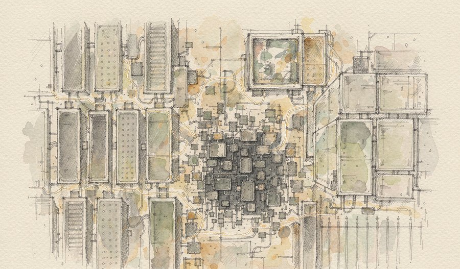
一场大型行业大会在上海开幕，厂商披露新一代超节点即将正式上市，面向大规模数据中心建设、万亿级参数模型训练与高并发推理场景。该方案通过自研全光互联协议实现大规模加速卡集群的统一内存编址，把分散的物理机柜整合为单一逻辑计算机，商用配置为1024卡，满配可扩展至8192卡。
观此：超节点从可选项变成必选项，原因是万亿参数以上模型的通信需求已经超出传统八卡服务器的架构承载能力。但这一品类目前还没有统一的性能评测标准，不同厂商公布的规格口径难以直接横向比较。厂商自己公布的数字，最终要靠实机测评才能落地为可比的结论。
来源：上海证券报
03
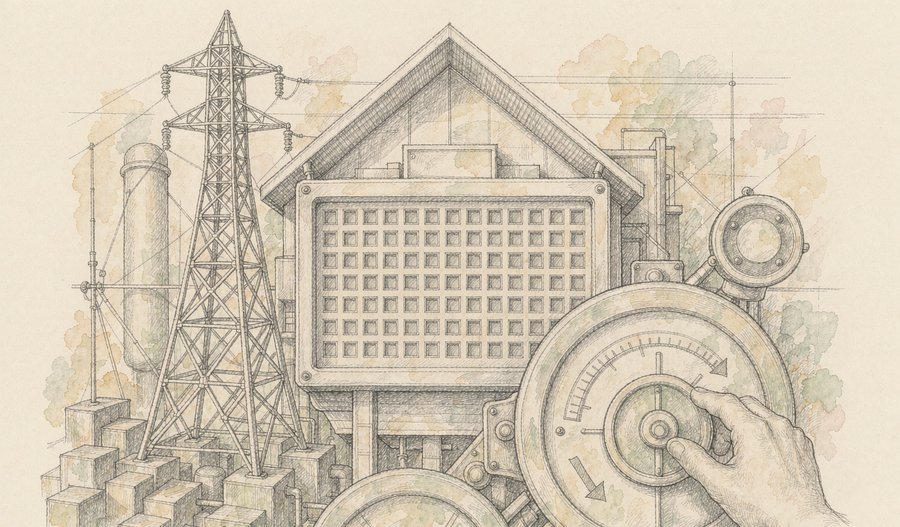
多家科技与能源企业联合宣布成立AI能源管理联盟，推动数据中心依据电网实时状况动态调整用电量，并为作出可核实灵活性承诺的设施争取更快的并网路径。联盟测算，提升用电灵活性有望从现有电力系统中释放最高上百吉瓦容量，并为每吉瓦新建数据中心节省约数亿美元电力系统成本，初期成员约二十家。
观此：这是一次行业自我约束，而不是新增发电能力。它把既有的闲置时段利用起来，缓解的是并网排队，不是电力总量。值得留意的是与之配套的监管动向也在推进——当自律与法规同时下手，数据中心用电的计价方式可能会先于芯片规格发生变化。
来源：每日经济新闻
04
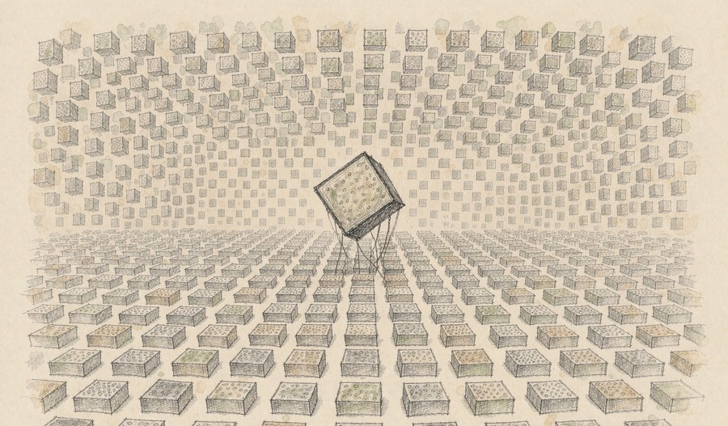
在一场半导体展会活动上，一家科技公司宣布其自研张量处理单元系统的集群规模已扩展至百万芯片级别，同时指出电力供应已经成为人工智能基础设施扩张的核心瓶颈。
观此：把集群规模讲到百万芯片级别，指向的不再是单点算力，而是系统工程能力——互联拓扑、故障隔离、能耗调度，任何一项跟不上，规模都会变成负担。这也解释了为什么最近的算力新闻里，电力与散热的出现频率正在超过性能本身。
来源：电子技术应用
05
一款主打智能体能力的手机正式开售，可通过语音指令让系统跨应用执行任务，优先覆盖自有生态产品，外部电商类应用暂不支持相关操作。该机型还搭载了国产高速移动内存，为国产高速内存首次在手机端量产落地。
观此：智能体手机的关键不在语音识别，而在权限边界——跨应用执行任务意味着系统要拿到过去只属于用户的授权。这也决定了它的落地节奏：先在自己生态里跑通，再逐家与应用方谈接入。相比之下，国产高速内存的首次量产更能说明供应链的推进节奏，这类突破通常不会出现在发布会的高光位置，却决定终端能跑多快。
来源：IT之家
06
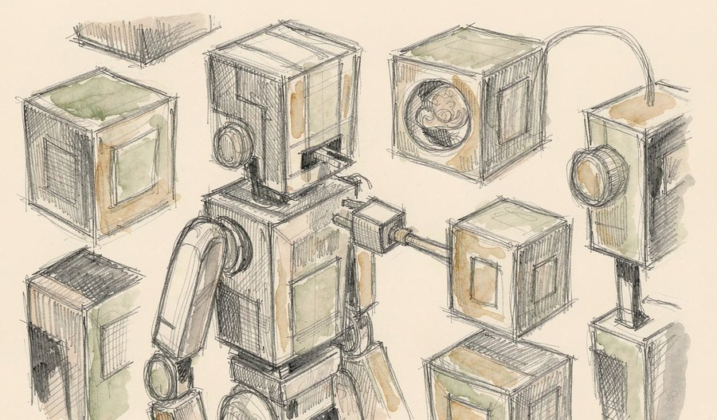
一家通信运营商宣布向全球开源一套连接视觉语言动作模型与机器人本体的通用工程底座，用于打通模型输出与硬件执行之间的工程环节，行业内的同类开源项目此前主要停留在模型层。
观此：具身智能长期存在一道裂缝：模型侧迭代很快，硬件侧接口各行其是，结果是每换一台机器人就要重做一遍适配。把中间层做成公共底座，等于把重复劳动从每家公司手里收走一次。开源这类工程件的价值往往不在技术领先，而在让整个行业少走同一段弯路。
来源：千家网
07
第九届中国机器人峰会在杭州开幕，主题围绕机器人时代的场景化落地。会上披露，上半年具身智能领域融资总额已突破900亿元，多地将2026年视作人形机器人量产元年；浙江方面介绍，其四足机器人国内市场占有率超过80%，人形机器人超过50%。会上还发布了具身智能能力评测框架与产业出海研究报告。
观此：最值得注意的不是融资数字，而是评测框架的发布。一个行业开始统一标尺，通常意味着它已经过了靠演示说服人的阶段。与此同时，产业界自己也在提示短板：核心部件待突破、真实场景应用占比偏低、标准体系尚未统一。量产元年的说法能否成立，要看这些短板补得快不快。
来源：中国科学报
08
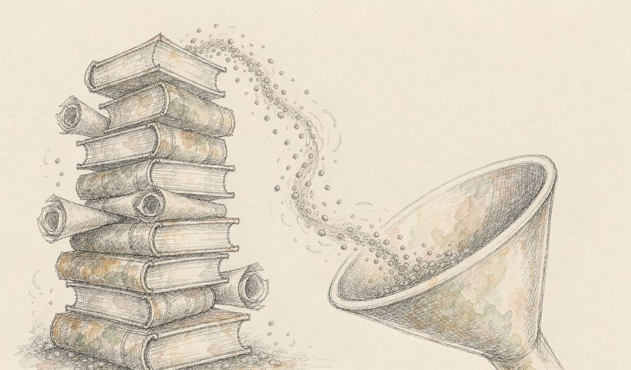
科研机构发布三类国家级高质量中文数据集，其中包括清洗完成的千亿级合规中文文本与多模态图文样本，向国内科研机构与企业免费开放，用于降低模型训练的数据获取门槛。
观此：高质量中文语料长期分散在各家手里，规模大的不干净，干净的不够大。把清洗过的数据作为公共品开放，改变的是中小团队的起点——不必再从零搭一条数据管线，就能开始做微调与验证。数据一旦公共化，模型能力的差距就会更多来自方法而不是资源。
来源：中国科学院
09
多家日本材料企业宣布自10月起对全球客户的光刻胶新定价整体上调约15%，其中高端系列与存储专用牌号的涨幅更高。同期，存储芯片厂商高管表示当前供应短缺已覆盖所有市场领域，即便全球推进约二十个扩产项目，真正有意义的新增供应也要到2028年才开始爬坡。
观此：这两件事指向同一条链条：算力需求的扩张正在把上游材料与存储同时推向紧张，而产能释放存在明显时滞，从立项到爬坡动辄需要数年。需要注意的是，供应节奏的判断来自企业自身口径，不是第三方供需预测；把它当作事实引用并不合适，当作产业界的自我判断来读更稳妥。
来源：界面新闻
10
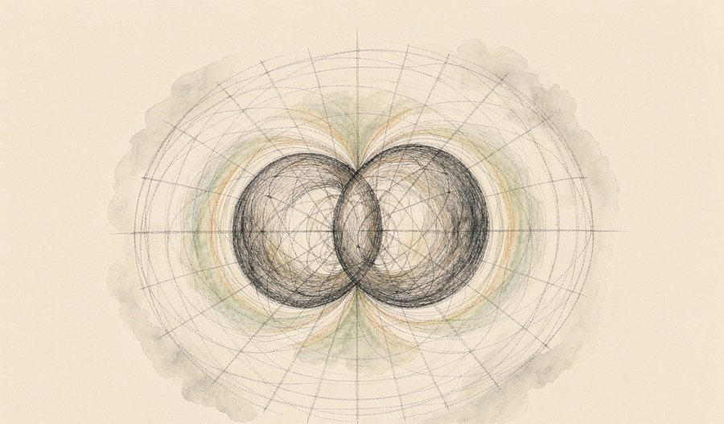
国家天文台研究团队依托中国天眼FAST发现一个轨道周期仅2.36小时的双中子星系统，总质量约2.488倍太阳质量，刷新已知同类天体的质量下限，其中伴星跻身全球已知最轻中子星行列。团队探测到近星点进动、引力红移、时间膨胀与轨道周期衰减等相对论效应，测量值与广义相对论预言高度吻合，并推算出两星将在约8200万年后并合。成果已发表于《物理评论快报》。
观此：人类目前确认的双中子星系统仅约三十例，样本稀缺是这个领域最大的现实困难。这对系统的价值在于它逼近理论极限——如此轻、如此紧致，成了检验物态方程与强引力效应的天然实验室。更值得期待的是后续：它的轨道倾角很小、周期极短，是极少数有望探测参考系拖拽效应的系统，而那仍是一个尚未完成的目标。
来源：中国科学院
11
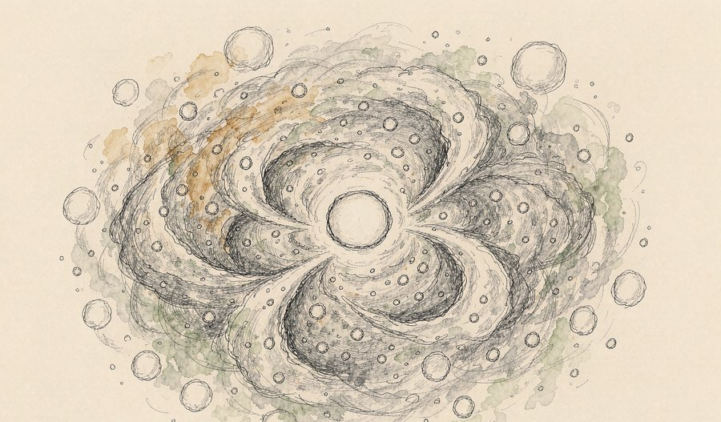
清华大学天文系团队牵头，利用中国天眼FAST与美国甚大阵射电望远镜的联合观测数据，在距地球约250万光年的仙女座星系中确认118个演化晚期的中性氢超泡，其膨胀时间可达约四千万年。研究比较了超泡的供能速率与湍流的能量损失速率，发现两者数值相当且随星系半径的变化趋势一致，首次直接证明星团中连续的超新星爆发足以维持星系尺度的气体湍流。成果发表于《自然·天文》。
观此：困扰学界几十年的问题是：湍流的能量会在千万年间耗散殆尽，远短于星系的寿命，那么是谁在持续为它充电？过去只能靠恒星形成率间接推算，传递效率始终无法确定。这项研究把超泡本身当成天然的能量计时器，把长期争论转化为一次可测量的对照。观测手段的互补——一个擅长测大尺度弥散气体，一个擅长分辨精细结构——是它能成立的前提。
来源：中国青年报
12
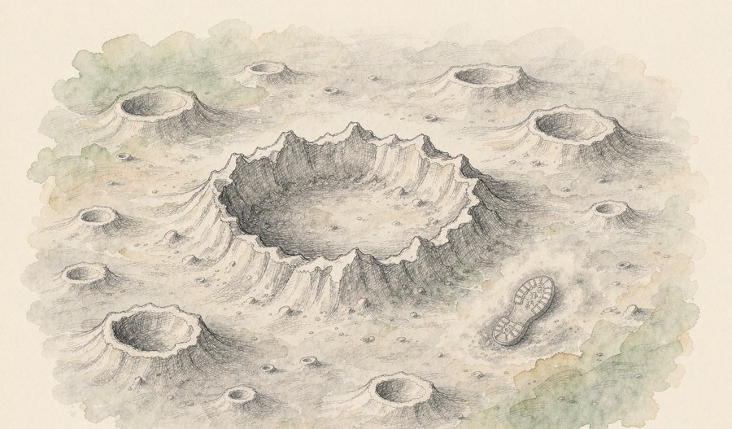
研究人员在月球表面新发现一处陨石坑，直径222米、最深43米，尺寸超过古罗马斗兽场，由体积接近一栋三层至六层楼房的撞击体形成，撞击发生在2024年四五月间。相关研究显示，这类规模的撞击平均约每132年出现一次，该坑是太阳系近期发现的最大陨石坑。数据由月球勘测轨道飞行器拍摄，因数据量庞大，影像直到2025年才被识别出来。
观此：这项发现最有意思的部分不是坑的尺寸，而是随之修正的一条认知：月球表层土壤每约八万年就会被撞击抛射物彻底翻转一次，比此前认为的更快。也就是说，人类留在月面上的那些脚印并不会永久保存，它们会随着表层翻动慢慢消失。行星表面的记忆，其实一直在被重写。
来源：新华社
13
一项联合研究首次证实，中脑导水管周围灰质外侧部是同时统筹调控快速眼动睡眠与觉醒两种状态的关键脑区，为伴随睡眠与觉醒紊乱的神经精神疾病提供了新的潜在干预靶点，也为睡眠障碍的机制研究与精准干预提供了新思路。论文发表于国际期刊《细胞报告》。
观此：睡眠研究长期把入睡与清醒当作两套独立系统，这次找到的脑区同时掌管两端，意味着睡眠与觉醒更可能是一组被统一调度的状态。对临床而言，如果紊乱的根源在同一个开关上，干预策略就不必分成两条线去做。
来源：健康报
14
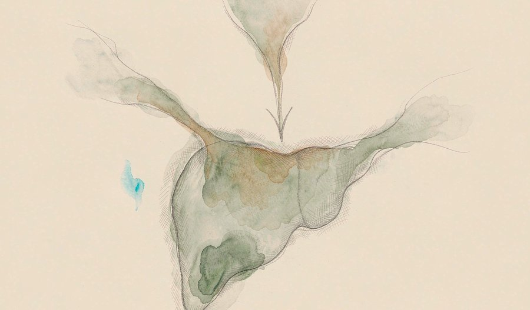
一项针对不可切除肝细胞癌的临床研究显示，在动脉化疗栓塞联合靶向治疗的基础上加用免疫治疗，可显著延长患者生存期：中位总生存期从12.0个月延长至23.1个月，中位无进展生存期从7.8个月延长至13.0个月。相关论文发表于国际期刊《免疫学前沿》。
观此：这组数据的看点在于叠加顺序而非单药强度：在已有的局部治疗与靶向治疗之上再加一层免疫机制，整体读数几乎翻倍。这类组合思路近年反复被验证有效，说明治疗方案的进步有时不来自新分子，而来自对既有手段的重新编排。
来源：健康报
15
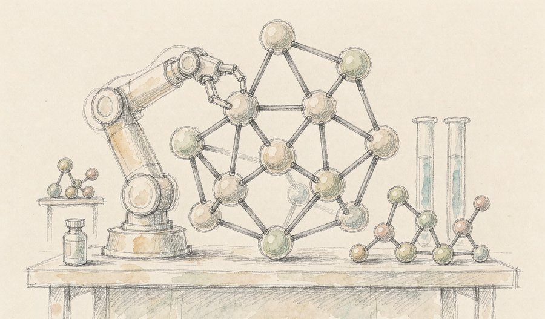
一家跨国药企宣布与人工智能公司合作，使用面向科学研究的模型平台加快新药发现与开发流程。同日，一家由互联网公司分拆的AI制药业务完成2.9亿美元首轮融资，投后估值约15亿美元，原母公司保留超过半数股份，本轮由多家头部机构参与。两个动作指向同一趋势：大型药企与AI公司之间的合作正从单点工具转向平台与研发流程层面。
观此：值得注意的是阶段性事实——人工智能发现的部分候选药物已进入临床试验，但尚无一款由AI发现的药物获批上市。概念验证已经完成，真正的考验是临床验证。也因此，双方在合作中都需要纳入数据治理与人工监督机制：模型能提出假设，但承担责任的主体仍是人。
来源：网易新闻
16
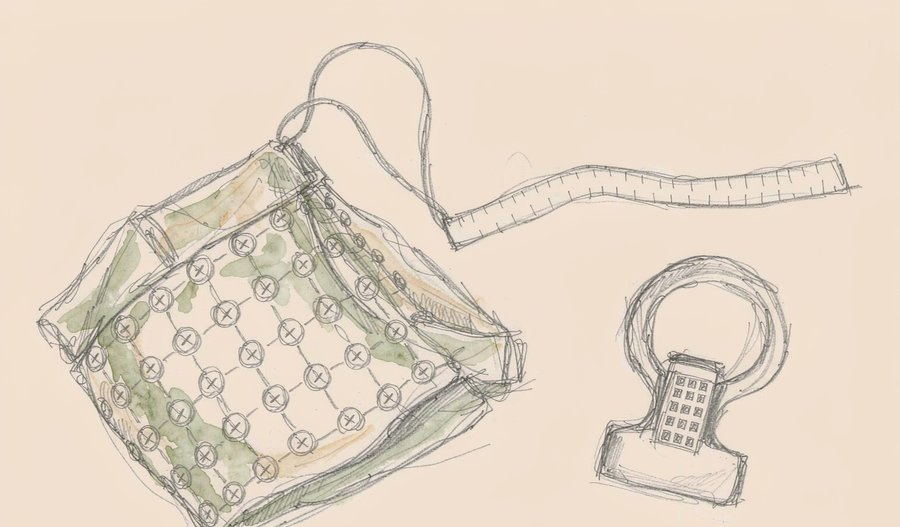
药监部门明确，我国出台全球首个适配算法类脑机医疗设备的强制性国家标准，统一脑电采集、信号处理、电气安全与临床验证等指标，覆盖康复助残、神经疾病筛查与民用健康监测设备，并将于明年9月正式实施。
观此：脑机接口行业此前的问题不是技术不足，而是没有共同尺度：采集质量如何衡量、算法输出如何验证、安全边界在哪里，各家说法不一。强制性标准把这些问题一次性钉住，短期会抬高准入门槛，长期则让临床使用有据可依。对一个直接接入人体的品类来说，先有标准，再谈规模，顺序不能颠倒。
来源：国家药品监督管理局
17
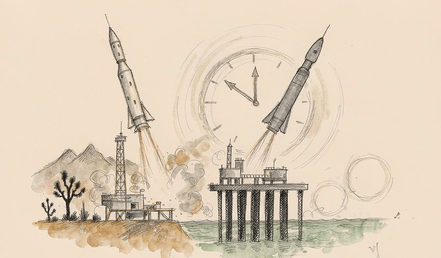
9月17日上午，我国在海南商业航天发射场使用长征十二号运载火箭成功发射卫星互联网低轨25组卫星；约两小时后，在酒泉卫星发射中心使用快舟十一号遥三运载火箭成功发射天仪51、52两颗遥感卫星。本次任务是长征系列运载火箭第667次发射，快舟十一号则完成该型火箭的第7次飞行。
观此：两小时内两发容易被读成提速，但更准确的理解是发射工位与总装交付能力同步提升后的自然结果。另外值得注意的是任务归属：长征十二号承担的是卫星互联网低轨星座组网，与此前民营火箭承担的星座分属不同体系，直接拿两者做数量对比意义有限。航天新闻里最容易被误读的，往往就是这类看起来可比的数字。
来源：科技日报
18
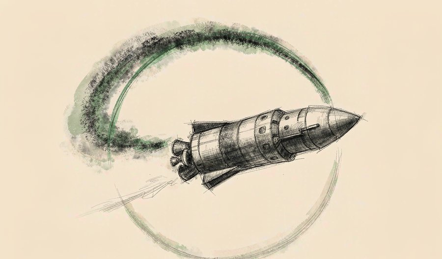
商业航天企业宣布，计划于9月22日进行重型运载火箭星舰的第14次试飞，首次尝试让星舰进入地球轨道飞行，并计划将26颗新一代星链卫星送入轨道。此前的试飞主要集中于亚轨道阶段的技术验证，本次被视为从亚轨道测试向轨道测试跨越的关键节点。
观此：从亚轨道到轨道，差的不是高度，而是一整套新的约束：入轨速度、长时间热环境、载荷释放时序，任何一项出问题都会让任务降级。同时把26颗卫星一并送入，意味着这次试飞还要承担一次真实的组网任务。当试验飞行开始顺带干活，通常说明该型火箭的可靠性评估进入了下一个区间。
来源：新华社
19
世界气象组织发布评估信息，确认全球臭氧层保护取得积极进展，恢复进程持续推进。这一长期趋势与全球逐步淘汰消耗臭氧层物质的行动有关。
观此：臭氧层是少有的、人类自己造成问题又自己把问题按住的环境案例。它的价值不只在结果，更在方法：可测量的指标、统一的国际约定、持续数十年的观测跟踪，三样缺一不可。当下气候议题争论激烈，这个案例提醒人们，长周期的环境治理并非注定失败，只是需要足够长的耐心。
来源：新华网
20
一个以高棉帝国为主题的特展在湖南省博物馆开幕，展期至2027年3月。展品来自柬埔寨国家博物馆、吴哥保护库房以及国内多家博物馆，共一百五十余件套，从早期造像的印度式风貌，到吴哥鼎盛时期的神王合一，再到与宋代大理国佛教艺术的隔空对照。展览最后一部分运用三维建模与沉浸式影像，构建包裹式观影空间。
观此：这类展览真正的看点在于对望的编排方式：把吴哥的造像与大理的佛光放进同一条叙事线，讲的其实是同一种信仰如何在不同地理条件下长出不同的面貌。而用数字影像收尾，也反映出一个变化——博物馆的展陈正在从陈列物件转向重建现场，观众看的不再只是器物，而是器物所处的世界。
来源：湖南省博物馆
把今天的二十条连起来看，格局是清楚的：技术竞争的评分标准正在改写，从「能做到多大」转向「能稳定地嵌进多普通的场景」。
芯片这一侧，2纳米首次装进量产机型，超节点把上千卡编成一台机器，集群规模讲到百万芯片级，三条路径都在回答同一个问题——单点性能逼近极限之后，规模与效率从哪里来。电力这一侧给出的答案更直白：不新增发电量的前提下，通过调度现有容量挤出空间，而这一步的前提是全行业先统一用电的计量与承诺方式。健康与科学这一侧，一边是把研发流程交给模型的产业实验，一边是给脑机接口立下强制标准，两条线其实是一件事的两面——新技术要先有可验证的尺度，才谈得上规模化。天文与行星科学则提供了另一种视角：一次称重、一次对照，就能推翻延续数十年的默认判断。
如果说今天有什么值得记下来的判断，那就是：真正的进展往往不是某项指标刷新纪录，而是评价指标本身被换掉的那一刻。
内容仅供资讯参考。
本文插画由 AI 辅助绘制。